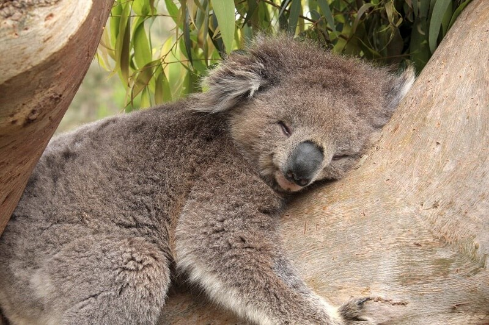
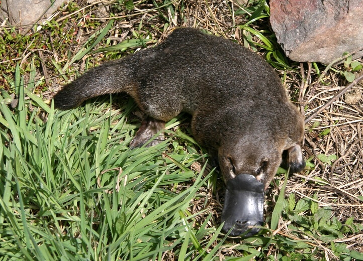
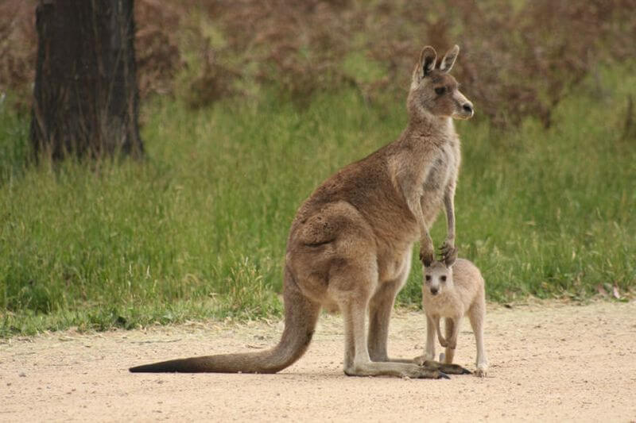
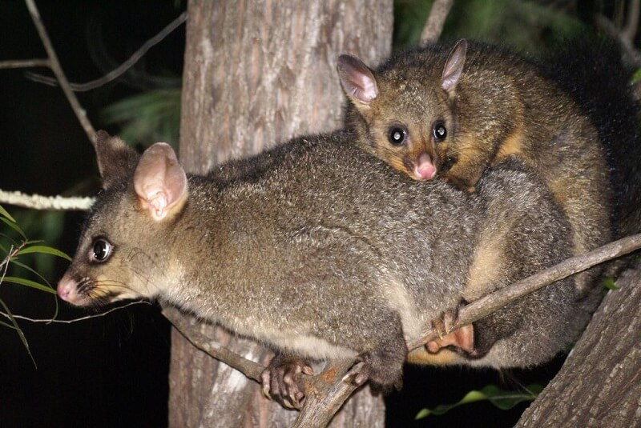
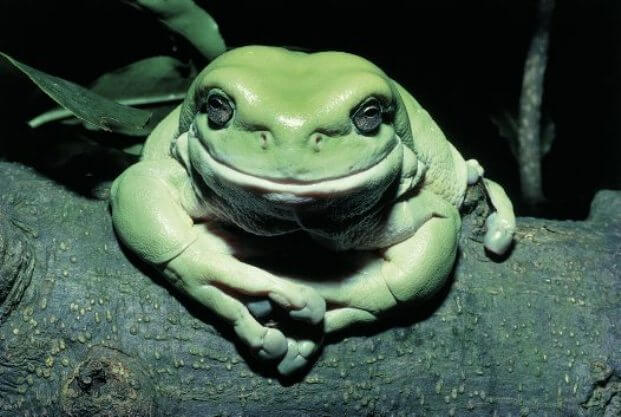

Тварини, заради яких варто відправитися в Австралію
Австралія — унікальний світ, населений дивовижними мешканцями. Деякі тварини «зеленого континенту» не зустрічаються більше ніде в світі, а про існування інших ми навіть і не підозрюємо. У цій статті ми познайомимо вас із самими цікавими і незвичайними представниками тваринного світу Австралії, заради яких справді варто відвідати цю чудову і своєрідну країну.
Коала: звір, що живе на евкаліпті
Цей звір дуже схожий на ведмедика з сірою шерстю, тільки дуже маленького, так як важить всього п’ятнадцять кілограмів. Коала живе в здебільшому на деревах, майже не спускаючись на землю. Завдяки гострим кігтям коала швидко і вправно лазить по деревах. Харчується листям евкаліпта і за добу з’їдає приблизно кілограм листя. Причому вона вміє відрізняти старі листя від молодих, адже молоде евкаліптове листя досить отруйне.
Коала — швидкий звір і справжній акробат. Вона вправно перестрибує з гілки на гілку, з дерева на дерево, навіть не думаючи про можливість падіння. Тварина проводить на деревних гілках все життя, спускаючись лише тоді, коли дерева знаходяться далеко один від одного. Ви можете не боятися заразитися від коали паразитами. Вони на ній просто не водяться, тому що її хутро пахне ароматом евкаліпта!
Качкодзьоб: чи то птах, чи то звір
Це забавне створіння ви одразу пізнаєте по великому лопаткообразному дзьобу, який надає йому подібність із птахом. Самка качкодзьоба відкладає яйця у шкарлупі, схожою на м’яку плівку. Вона висиджує їх приблизно десять днів, у гнізді, як птах. І все ж качкодзьоб не птах, а ссавець. Дитинчата з’являються на світ абсолютно голими — без шерсті, і сліпими. Щоб погодувати їх, мати лягає на спину, а малята злизують молоко, яке сочиться з її пір. А коли вони підростають, самка переносить їх до водойми, щоб вони вчилися полювати на дрібних тварин. Нора качкодзьоба знаходиться на березі водойми.
Тварина відмінно плаває, що ще більше споріднює її з водоплавним птахом. У качкодзьоба лапи з перетинками і обтічне тіло. А на суші звірятко рухається насилу і виглядає незграбно. Полює не більше години — рано вранці або пізно ввечері. Ловить черв’яків, риб, личинок, рачків та іншу водну дрібницю. Дзьоб у цього дивного звіра плоский і широкий, як у качки. А зубів взагалі немає, – тільки два ороговілих горбка на язику, якими він і перетирає їжу з допомогою дзьоба.
Кенгуру: символ Австралії
Кенгуру вже давно став символом Австралії. Рудий кенгуру взагалі майже не боїться людини, так що за ним спостерігати простіше всього. Тварина пересувається на задніх лапах, стрибками, що в стоячому положенні робить його схожим на людину. Передні лапи у кенгуру короткі, а задні сильні і довгі, також, як і довгий сильний хвіст.
Великі вуха допомагають вловлювати навіть дуже слабкі звуки. Самці б’ються переважно передніми лапами. Але іноді в запалі бійки вони починають нападати всіма чотирма лапами, спираючись тільки на хвіст.
Дитинча кенгуру народжується настільки слабким, що самці доводиться доношувати його в особливої сумці на животі. Кенгуреня з’являється на світ голим і сліпим, вагою всього в один грам і довжиною в два сантиметри. В сумці дитинча живе до восьми місяців.
Кузу: звір, що живе на деревах
Маленький нічний сумчастий звірок, що живе на деревах. Чіпляється за гілки сильним хвостом, як це роблять мавпи.
Живиться квітами, корою, деревним листям, але може випити і пташині яйця. Живуть кузу, збираючись у великі галасливі зграї, недалеко від людей.
Австралійська пустельна жаба: 5 років без води!
Австралійська пустельна жаба вражає своєю пристосованістю до суворих місцевих умов. Ця пустельниця накопичує в організмі стільки води, що, зариваючись глибоко в мул, здатна просидіти там близько п’яти років, чекаючи дощі! Вона виходить на поверхню тільки тоді, коли в пустелі починається злива.